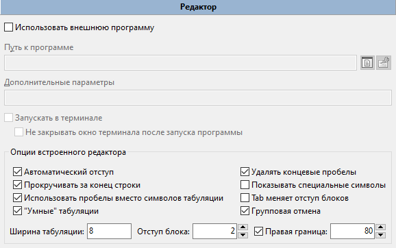
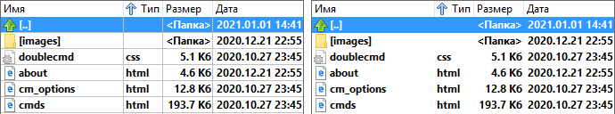
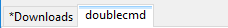
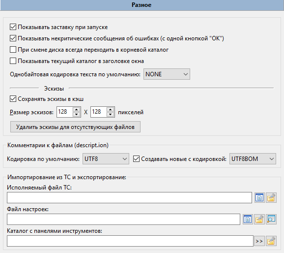
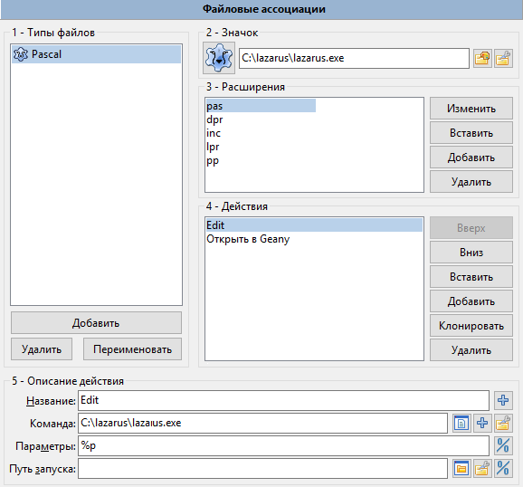

Double Commander сохраняет свои настройки в файлах, вы можете изменить их расположение в настройках.
Основными файлами являются:
doublecmd.xml – все главные настройки программы;
extassoc.xml – настройки файловых ассоциаций;
pixmaps.txt – сопоставляет расширения файлов с именами значков MIME-типов;
multiarc.ini – внешние архиваторы;
shortcuts.scf – настройки горячих клавиш;
highlighters.xml – настройки цветов редактора;
history.xml – история каталогов, командной строки, поиска и так далее;
и несколько других...
Обычно нам не нужно редактировать эти файлы вручную, так как за редким исключением параметры Double Commander доступны через интерфейс программы.
Диалоговое окно "Настройки" позволяет изменить почти все параметры Double Commander, но есть несколько параметров, которые можно изменить только вручную в файле конфигурации doublecmd.xml.
В Double Commander есть несколько внутренних команд для открытия диалога настроек и быстрого перехода к нужному разделу.
Double Commander поддерживает импорт/экспорт некоторых настроек: избранные каталоги, избранные вкладки, внешние архиваторы, панель инструментов (главная и центральная), подсказки. Также список горячие клавиш можно сохранить в новый файл и вы можете переключаться между ними.
Примечание: Справа от кнопок выбора файла или каталога находится кнопка Некоторые функции для выбора подходящего пути  : всплывающее меню содержит списки переменных (включая переменные окружения) и некоторые дополнительные функции, описание смотрите здесь.
: всплывающее меню содержит списки переменных (включая переменные окружения) и некоторые дополнительные функции, описание смотрите здесь.
Тут мы видим все варианты перевода программы и можем выбрать предпочитаемый.
Здесь 5 параметров, включая один список, которые влияют на некоторые аспекты поведения DC.
Не запускать более одной копии DC – Если включено, может быть запущена только одна копия программы. Если вы попробуете запустить вторую копию Double Commander, будет активирована первая копия.
Сворачивать в системный трей – Double Commander будет сворачиваться в значок в системном трее (область уведомлений), а не в список окон на панель (или панель задач Windows).
Всегда показывать значок в трее – Если включено, в дополнение к кнопке окна Double Commander на панели (или панели задач Windows) будет показан значок в трее.
Чёрный список дисков – используется, чтобы скрыть определённые диски в панели дисков. Каждый элемент должен содержать полный путь к диску или точке монтирования. Несколько элементов можно указать, перечислив их через точку с запятой ";" без пробелов. Примеры: /media/cdrom;/mnt/win_c (Linux) или a:\;b:\;d:\ (Windows). Также в Unix/Linux вы можете использовать маски, пример для файлов AppImage: /tmp/.mount_*. Скрытые диски будут по-прежнему доступны, например, вы можете открыть их из меню избранных каталогов или вручную изменить путь.
Скрывать отмонтированные устройства – Отмонтированное устройство будет автоматически удалено с панели кнопок дисков и из списка дисков.
В этом разделе собраны настройки встроенных инструментов Double Commander (редактор (F4), просмотрщик (F3) и инструмент сравнения файлов) и команды для запуска терминала.
Здесь можно указать свои программы для редактирования, просмотра и поиска различий, они будут использоваться вместо встроенных.
Почти все параметры и переключатели доступны в окне встроенного просмотрщика, в этом разделе лишь две группы параметров.
Первая группа позволяет указать внешнюю программу для просмотра файлов. Double Commander будет автоматически добавлять полное имя файла как последний параметр запуска при каждом вызове просмотрщика.
Дополнительно: Запускать в терминале и Не закрывать окно терминала после запуска программы могут быть полезны, если вы используете консольную программу и/или терминальный вывод программы имеет значение (или просто временно для отладки).
Следующая группа параметров, Режим просмотра "Книга", связана с особым режимом просмотра текста: вы можете задать цвет шрифта, цвет фона и количество колонок текста (как книжный разворот или газета).
Также доступно несколько параметров, которые можно изменить только вручную в файле конфигурации doublecmd.xml.

Первая группа параметров позволяет указать внешнюю программу для редактирования текстовых файлов. Double Commander будет автоматически добавлять полное имя файла как последний параметр запуска при каждом вызове редактора.
Дополнительно: Запускать в терминале и Не закрывать окно терминала после запуска программы могут быть полезны, если вы используете консольную программу и/или терминальный вывод программы имеет значение (или просто временно для отладки).
Опции встроенного редактора:
Автоматический отступ – При нажатии клавиши Enter новая строка будет создана с тем же отступом, что и у предыдущей.
Удалять концевые пробелы – Автоматическое удаление концевых пробелов, применяется только к редактируемым строкам.
Прокручивать за конец строки – Позволяет перемещать каретку в пустое пространство за пределом конца строки.
Показывать специальные символы – Пробелы и табуляции будут обозначаться специальными символами.
Использовать пробелы вместо символов табуляции – Конвертировать символы табуляции в заданное количество пробелов (при вводе).
Tab меняет отступ блоков – Нажатия клавиш Tab и Shift+Tab соответственно увеличивают и уменьшают отступ выделенного текста.
"Умные" табуляции – Нажатия клавиши Tab будут перемещать каретку к позиции под следующим непробельным символом предыдущей строки.
Ширина табуляции – Ширина символа табуляции (в количестве символов). Если включено Использовать пробелы вместо символов табуляции, то клавиша Tab будет вставлять указанное количество символов пробела. Эта настройка не применяется, если включена опция "Умные" табуляции.
Правая граница – Маркер длины строк, тонкая вертикальная линия в заданной позиции: строки не будут обрезаться с принудительным переносом на новую строку, это просто визуальная подсказка. Полезно в случаях, когда существует рекомендация ограничить длину строк (например, 80 или 120 символов).
2.3.2.1. Инструменты > Редактор > Подсветка
Для встроенного редактора используется компонент SynEdit, в этом разделе доступны некоторые настройки правил подсветки синтаксиса, являющихся частью SynEdit.
В верхней части окна расположено выпадающее меню с типами файлов (обычный текст, языки программирования и разметки) и поле для списка расширений файлов. Кнопки:
Сохранить – сохранит изменения в списке расширений файлов.
Сбросить – сбросит список к значению по умолчанию.
В левой части окна расположен список доступных элементов для выбранного типа файлов, в правой части расположена область предварительного просмотра.
Вы можете изменить используемые цвета текста и фона и стиль шрифта (подчёркнутый, жирный, курсив и зачёркнутый) для ключевых слов, строк, чисел, операторов и так далее. Для текста по умолчанию доступны только цвета текста и фона.
Отметка используется для добавления рамки вокруг элемента: вы можете выбрать цвет, тип рамки и тип линии.
Использовать (и менять) глобальную схему и Использовать локальную схему предназначены только для текста по умолчанию: вы можете изменить цвета сразу для всех типов файлов или только для некоторых.
Все настройки сохраняются в файле highlighters.xml.
Примечание: Возможные пути для изменения (исправления или улучшения) разбора файлов, списков ключевых слов и так далее:
Кроме того, Double Commander также использует для подсветки синтаксиса компонент SynUniHighlighter, подробности смотрите в FAQ.
2.3.3. Инструменты > Поиск различий
Почти все параметры и переключатели доступны в окне встроенной программы сравнения, в этом разделе лишь две группы параметров.
Первая группа позволяет указать внешнюю программу для сравнения файлов. Double Commander будет автоматически добавлять полные имена файлов как последние параметры запуска при каждом вызове инструмента сравнения файлов.
Дополнительно: Запускать в терминале и Не закрывать окно терминала после запуска программы могут быть полезны, если вы используете консольную программу и/или терминальный вывод программы имеет значение (или просто временно для отладки).
Позиция панели после сравнения – определяет порядок, в котором имена файлов передаются программе сравнения (встроенную или внешнюю):
Активная панель слева, неактивная справа – Файл из активной файловой панели будет открыт в левой панели программы сравнения, второй файл будет открыт в правой панели.
Левая панель слева, правая справа – Файл из левой файловой панели будет открыт в левой панели программы сравнения, второй файл будет открыт в правой панели.
Если в активной панели выделено два файла, то первый файл будет открыт в левой панели программы сравнения.
В этом разделе собраны параметры запуска терминала:
Первые два пункта предназначены для запуска команд в терминале: для обозначения положения запускаемых команд в командной строке используйте {command} в поле параметров.
Значения по умолчанию:
Windows: cmd.exe
macOS: /Applications/Utilities/Terminal.app
Linux и другие Unix-подобные системы:
Для Debian и базирующихся на Debian дистрибутивов (antiX, Devuan, Ubuntu, Linux Mint и другие) будет использоваться x-terminal-emulator: это символьная ссылка на терминал, используемый в этих системах по умолчанию.
В ином случае Double Commander попытается получить значение из настроек среды рабочего стола: Cinnamon, GNOME, KDE, LXDE, LXQt, MATE или Xfce.
Если автоматическое определение не удалось, Double Commander будет использовать xterm.

Здесь можно выбрать шрифты для редактора (F4), просмотрщика (F3), файловых панелей (Основной) и других элементов интерфейса Double Commander, а также их размеры. Для каждого вы можете видеть выбранный шрифт. Одно важное замечание: шрифты для редактора и просмотрщика должны быть МОНОШИРИННЫЕ. На изображении ниже показан пропорциональный шрифт (обратите внимание на странный интервал) и моноширинный шрифт, который отображается с правильными интервалами. Кроме того, с некоторыми пропорциональными шрифтами символы могут налезать друг на друга и выглядеть довольно странно.

Вверху обычный, пропорциональный, шрифт, внизу моноширинный
2.5.1. Цвета > Файловые панели
В этом разделе собраны настройки внешнего вида файловых панелей:

Настройки цвета здесь являются глобальными настройками для обеих панелей. Эти настройки можно переопределить, создав набор колонок, который может иметь собственные настройки цвета и многое другое для каждой вкладки панели! Подробнее о том, как это сделать, смотрите в разделе Список файлов > Колонки > Наборы колонок. Вы должны настроить текущий стиль колонок (Default по умолчанию) или создать свой собственный стиль и применить его для любой вкладки.
Здесь вы можете выбрать цвета, которые будут использоваться для файловых панелей: Текст, Фон 1, Фон 2, Выделение, Курсор, Текст под курсором, Неактивный курсор, Неактивное выделение, а также Рамка вокруг курсора (если вы не используете курсор-рамку). С помощью двух опций для фона вы можете сделать чередующиеся полосы на панелях, как на некоторых скриншотах.
Инверсное выделение – инвертирует цвета выделенного текста и текста под курсором.
Курсор в неактивной панели – включает отображение курсора также в неактивной панели.
Курсор-рамка – Вместо сплошного прямоугольника Double Commander будет использовать рамку.
Разрешить наложение цвета включает возможность использовать для имён файлов цвет, отличный от цвета по умолчанию (смотрите раздел Цвета > Типы файлов).
Также здесь вы можете уменьшить яркость неактивной панели и изменить цвета индикатора свободного места на диске.
Внизу окна расположена область предварительного просмотра, таким образом, вы можете сразу увидеть все изменения.
Кнопка Сбросить на умолчания DC сбросит все параметры до значений по умолчанию.
Здесь можно указать типы файлов, имена которых будут другого цвета, отличного от цвета по умолчанию. Должен быть включен параметр Разрешить наложение цвета (по умолчанию включено).
Строка Имя служит для описания файла (что он делает или какой программой открывается).
В строке Маска указывается маска файлов, по которой Double Commander будет их распознавать (звёздочка "*" обозначает любое количество символов, знак вопроса "?" – любой один символ). Если масок несколько, то они перечисляются через точку с запятой ";" без пробелов. Также вы можете использовать шаблоны поиска ( ), в том числе поиска с информационными (контентными) плагинами.
), в том числе поиска с информационными (контентными) плагинами.
В строке Атрибуты вы можете указать атрибуты файлов, с помощью которых также будут распознаваться различные их типы (недоступно при использовании шаблона поиска). Атрибуты файла задаются следующими шаблонами:
Windows: [d или l]rahs[c или e]tp
Linux: [b, c, d, f, l, r или s]rwxrwxrwx
Описание значений смотрите здесь. Если атрибут не должен быть установлен, его нужно заменить символом "-", ненужные следует скрыть: звёздочка "*" обозначает любое количество символов, знак вопроса "?" – любой один символ. Например, с ?r* (Windows) или ?r-* (Linux) будут найдены все файлы и папки только для чтения.
Вы можете использовать цвет из списка или указать свой с помощью кнопки ">>".
Не забывайте нажимать на кнопку "Применить" после внесения изменений в список или в свойства.
Правила применяются строго в обратном порядке: правило, находящееся выше в списке, будет перекрывать любое правило ниже.
Здесь вы можете настроить действие при нажатии некоторых клавиш в активной файловой панели: Буквы, Alt+Буква, Ctrl+Alt+Буква. Вы можете выбрать одно из следующих действий: ничего не делать, установить фокус на командную строку и ввести команду, запустить быстрый поиск или быстрый фильтр
Правая и левая стрелки меняют каталог (Lynx-поведение) – стрелка вправо открывает каталог или запускает программу под курсором, а стрелка влево открывает родительский каталог.
2.6.1. Клавиши > Горячие клавиши
Здесь можно назначить клавиши для вызова команд, а также указать параметры для этих команд.

Набор горячих клавиш – Выпадающее меню, содержащее список файлов с набором горячих клавиш. Они хранятся в каталоге с файлами настроек программы.
Справа кнопка меню, связанного с файлом:
Действия с текущим файлом: Сохранить сейчас, Переименовать, Копировать и Удалить.
Восстановить настройки DC.
Команды для переключения на предыдущую и следующую категории.
Команды для переключения порядка сортировки таблицы команд (см. ниже).
Категории – выбор категории комбинаций горячих клавиш: Основные, Встроенная программа просмотра, Групповое переименование, Диалог копирования/перемещения, Диалог редактирования комментария, Поиск различий, Поиск файлов, Редактор, Синхронизация каталогов.
Фильтр – аналог быстрого поиска, только по внутренним командам.
Порядок сортировки – переключает порядок сортировки таблицы команд:
По имени команды..
По горячим клавишам (группировать) – Если назначено несколько горячих клавиш, они будут перечислены через точку с запятой ";".
По горячим клавишам (по одной).
Команды – список всех доступных внутренних команд Double Commander. Список представлен в виде таблицы из трёх колонок:
Команда (имя внутренней команды).
Горячие клавиши (назначенные сочетания клавиш, если есть).
Описание (краткое описание).
В таблице внизу окна показаны назначенные клавиатурные сочетания, параметры и элементы интерфейса (см. ниже) для выделенной команды.
Добавить – откроет окно для добавления горячих клавиш.
Редактировать – откроет то же окно, но с уже установленными горячими клавишами и другими параметрами.
Удалить – удалит выделенную в списке горячую клавишу.
Окно для добавления горячих клавиш:

Сочетание клавиш – здесь отображается новое клавиатурное сочетание для команды. Поставьте курсор в эту строку и нажмите желаемую комбинацию клавиш. Если новая комбинация уже используется для другой команды, Double Commander покажет предупреждение.
Параметры (каждый в отдельной строке) – здесь можно добавить какие-нибудь параметры команды. Большинство параметров должны быть добавлены как параметр=значение (если не указано иное), без кавычек и каждый в отдельной строке.
Только для этих элементов – Горячая клавиша будет работать, только если выбранный элемент(ы) интерфейса в фокусе: командная строка, файловая панель или панель быстрого поиска.
В правой части окна расположены следующие кнопки:
Кнопка F1 – покажет меню со списком свободных доступных сочетаний клавиш, сгруппированных по алфавиту и модификаторам.
Кнопка "+" добавит ещё одно поле для сочетания клавиш (до пяти).
Кнопка "-" удалит последнее сочетание клавиш из списка.
Вы можете задать несколько горячих клавиш для внутренней команды двумя способами: используйте кнопки Добавить и "+" или кнопку Добавить несколько раз. Второй способ позволяет использовать выбранную команду с разными параметрами.
Выделение с помощью мыши, Режим – возможность выделять и снимать выделение с файлов и папок с помощью мыши. Режим имеет значение Левая клавиша или Правая клавиша (длительное нажатие вызовет контекстное меню файлов и папок).
Щелчком по значку – позволяет выделять файлы одним щелчком мыши по значку. В режиме эскизов выделение щелчком по значку работает, когда вы щёлкаете по левой части (25%) изображения, таким образом, вы можете установить курсор без выделения, щёлкнув мышью по правой части изображения.
Прокрутка – возможность использовать колесо мыши для прокручивания списка файлов в панелях.
Построчно, с движением курсора – при вращении колеса мыши вместе с прокруткой списка вверх и вниз будет двигаться и курсор.
Построчно – то же самое, только без движения курсора, он будет оставаться в одном положении. Также вы можете указать количество строк.
Постранично – как предыдущее, но прокрутка осуществляется по страницам, а не по строкам (более быстрая прокрутка).
Открытие файлов и запуск программ – задаёт поведение при щелчке мыши по элементу списка файловой панели:
Двойной щелчок мыши открывает папки и файлы или запускает приложения (по умолчанию).
Один щелчок открывает файлы и папки.
Один щелчок открывает только папки. Для файлов необходим двойной щелчок.
Текстовый курсор не следует за курсором мыши – используется для двух последних значений. Если включен одиночный щелчок, по умолчанию текстовый курсор будет перемещаться вслед за курсором мыши: это помогает избежать случайного открытия файлов или папок. Вы можете отключить, если вам это не нужно (или не нравится).
Double Commander поддерживает возможность перетаскивания файлов с помощью мыши (то есть при зажатой левой клавише мыши) в окна внешних приложений (например, текстовый или графический редактор или программа просмотра), на панель инструментов и копирование/перемещение файлов между каталогами. Если действие возможно, рядом с курсором мыши будет отображаться символ "+".
При перетаскивании файла на свободное место панели инструментов будет создана кнопка с внешней командой, переданный файл будет использоваться как команда. Перетаскивание файла на кнопку возможно только если это кнопка с внешней командой: команда будет запущена и файл будет передан ей как параметр запуска.
Для операций копирования или перемещения (если была зажата клавиша Shift) файлов возможны следующие цели: любая папка каталога активной панели (имя папки будет выделено рамкой), противоположная файловая панель или каталог любой открытой вкладки (просто бросьте файлы на заголовок нужной вкладки). Используйте ".." для копирования файлов в родительский каталог. Double Commander также может копировать файлы в архив, если добавление файлов поддерживается.
Перетаскивание с помощью правой кнопки мыши покажет меню со следующими действиями: Копировать, Переместить, Создать ссылку, Создать символьную ссылку и Отмена.
Показать диалог подтверждения при перетаскивании – помогает избежать случайных ошибок при использовании перетаскивания файлов внутри активной файловой панели или между панелями: Double Commander покажет диалоговое окно подтверждения, как при обычном копировании или перемещении файлов.
Следующая функция доступна только в Windows: вы можете перетащить текст, выделенный в веб-браузере или текстовом процессоре (например, LibreOffice Writer или Microsoft Word), на панель и сохранить его. Здесь вы можете выбрать формат файла (RTF, HTML или обычный текстовый файл), кодировку и включить автоматическое создание имени.
В этом разделе вы можете задать различные параметры сортировки файлов, а также форматы даты/времени и размера.

Метод сортировки – задаёт метод сортировки в файловых панелях:
Алфавитная, с учётом особенностей языка – Этот метод сортирует по алфавиту, с учётом особенностей языка системы и региональных настроек: также будут учтены дополнительные символы (например, умлаут и другие диакритические символы в германских языках или буква "ё" в русском).
Алфавитная с сортировкой спецсимволов – Аналогично предыдущему методу, но дополнительно список будет отсортирован по специальным символам и знакам препинания перед буквами.
Естественная сортировка: алфавитно-числовая – Этот метод сортирует цифры как числа: например, "3" будет показано перед "20", потому что 20 больше 3.
Естественная с сортировкой спецсимволов – Аналогично предыдущему методу, но также с сортировкой по специальным символам и знакам препинания.
Чувствительность к регистру – дополняет выбранный метод:
не чувствителен к регистру;
соответственно локальным установкам (аАбБгГ);
сначала верхний регистр, потом нижний (АБВабв).
Сортировка каталогов – задаёт положение каталогов в списке файлов:
сортировать по имени и показывать первыми;
сортировать как файлы и показывать первыми;
сортировать как файлы.
Вставлять новые файлы – задаёт позицию нового файла в списке:
вверху списка файлов;
после каталогов (если каталоги отсортированы перед файлами);
в отсортированной позиции;
внизу списка файлов.
Перемещать изменённые файлы – задаёт позицию, если свойство файла, используемое в данный момент для сортировки, было изменено (дата модификации, размер и т. д.):
не менять позицию;
использовать то же, что и для новых файлов;
в отсортированной позиции.
Первый параметр в группе Форматирование – Формат даты и времени. Вы можете выбрать один из существующих шаблонов из выпадающего списка или задать собственный, используя символы форматирования даты и времени.
Символы форматирования представлены ниже (на основе документации Free Pascal). Некоторые значения зависят от ваших региональных настроек!
Как пример мы будем использовать 2021.01.24 09:06:02 (то есть yyyy.mm.dd hh:mm:ss) и регион Россия.
| Возможные символы | ||
|---|---|---|
| Символы | Описание | Пример |
c | краткая дата и полное время, если оно не равно нулю | 24.01.2021 9:06:02 |
f | как c, но добавляет время, даже если оно равно нулю | 24.01.2021 9:06:02 |
d | день месяца | 24 |
dd | день месяца (с лидирующим нулём) | 24 |
ddd | день недели (аббревиатура) | Вс |
dddd | день недели (полностью) | воскресенье |
ddddd | краткая дата | 24.01.2021 |
dddddd | полная дата | 24 Январь 2021 г. |
m | месяц или минуты, если указано после h или hh | 1 |
mm | месяц или минуты, если указано после h или hh, с лидирующим нулём | 01 |
mmm | месяц (аббревиатура) | янв |
mmmm | месяц (полностью) | Январь |
yy | год (две цифры) | 21 |
yyyy | год (с веком) | 2021 |
h | часы | 9 |
hh | часы (с лидирующим нулём) | 09 |
n | минуты | 6 |
nn | минуты (с лидирующим нулём) | 06 |
s | секунды | 2 |
ss | секунды (с лидирующим нулём) | 02 |
t | краткое время | 9:06 |
tt | полное время | 9:06:02 |
am/pm | 12-часовой формат времени с am или pm соответственно (также AM/PM, a/m или A/M); например, t AM/PM | 9:06 AM |
/ | вставить разделитель даты | . |
: | вставить разделитель времени | : |
"текст" | текст как есть; например, yyyy "от РХ" | 2021 от РХ |
Следующие параметры задают формат размера файла:
Формат размера файла – будет использоваться в файловых панелях.
Информация о диске – будет использоваться в списке дисков и строке свободного места.
Строка состояния – будет использоваться в строке состояния файловых панелей.
Файловые операции – будет использоваться в диалогах файловых операций: копирование, перемещение, подсчёт контрольных сумм и так далее.
Также справа вы можете задать количество цифр после десятичного разделителя (т.е. разделителя целой и дробной частей числа): 0, 1, 2 или 3.
Единицы измерения размера файла: байты, килобайты, мегабайты, гигабайты, терабайты или плавающий (Double Commander выберет единицу измерения автоматически, в зависимости от размера).
"Пользовательский" в названии означает, что Double Commander будет использовать Пользовательские сокращения из списка ниже. Кнопка По умолчанию сбросит их до значений по умолчанию для выбранного языка (указаны в соответствующем языковом файле).
2.8.1. Список файлов > Список файлов (дополнительно)
Выделение/снятие выделения:
Фильтр для файлов в стиле Windows ("*.*" выделяет также файлы без расширения и т.д.) – По умолчанию маска "*.*" соответствует имени любого файла, который имеет расширение, для любых имён файлов используйте маску "*". Если включено, маска "*.*" будет обозначать любой файл.
Маска атрибута по умолчанию – будет использоваться для следующих команд:
Выделить все (cm_MarkMarkAll),
Снять выделение со всех (cm_MarkUnmarkAll),
Инвертировать выделение (cm_MarkInvert),
Выделить группу (cm_MarkPlus)
и Снять выделение с группы (cm_MarkMinus).
Например, если вы хотите, чтобы эти команды работали только с файлами, укажите d-.
Кнопка Добавить открывает окно выбора атрибутов файла, вы можете использовать её или ввести их вручную. Подробнее об атрибутах файлов и их использовании смотрите здесь.
Использовать в диалоге выбора маски независимый фильтр атрибутов – Если включено, в диалоговые окна команд Выделить группу (cm_MarkPlus) и Снять выделение с группы (cm_MarkMinus) будет добавлен фильтр атрибутов.
При выделении файлов пробелом перемещать курсор на следующий файл – реализует способ выделения нескольких файлов с помощью клавиши пробела. При зажатом пробеле курсор спускается вниз, отмечая файлы (как при выделении клавишей Insert). По умолчанию подобного результата можно добиться с помощью комбинаций клавиш Shift+Вниз или Shift+Вверх.
Показывать квадратные скобки вокруг имён папок – позволяет визуально отличать папки от файлов при отключенном показе значков. Также вы можете использовать вместо них любые символы, смотрите описание параметров <FolderPrefix> и <FolderPostfix> здесь.
Показывать системные и скрытые файлы – Если включено, Double Commander будет показывать файлы и папки с атрибутом "скрытый" или "системный" (Windows) или с именем с точкой в начале (Linux и другие Unix-подобные системы). Также можно переключить в главном меню.
Параметры Загружать список файлов в отдельном потоке и Загружать значки после списка файлов предназначены для ускорения отображения списка файлов в панели, т.е. окно приложения будет меньше зависать при открытии больших каталогов.
Не загружать список файлов, пока вкладка не будет активирована – При запуске Double Commander не будет загружать список файлов неактивных вкладок, открытых в предыдущей сессии.
Подсвечивать новые и изменённые файлы – Если включено, имена файлов, которые в настоящее время создаются или изменяются, будут мигать.
Разрешить переименование при щелчке по имени файла под курсором – дополнительная возможность переименовать файл с помощью левой кнопки мыши (не зависит от клавиши, выбранной для выделения мышью), как в Проводнике Windows. В разделе настроек мыши должно быть выбрано Двойной щелчок мыши открывает папки и файлы или запускает приложения.
Разрешить переход в родительский каталог двойным щелчком по свободному месту в файловой панели – дополнительная функция для упрощения навигации по каталогам. Но неприменимо, если вы используете набор колонок и список файлов в текущем каталоге не помещается в панели (т.е. вы видите вертикальную полосу прокрутки).
2.8.2. Список файлов > Краткий
Здесь всего два параметра.
Показывать расширения файлов: сразу после имени или выровненными (по Tab). Во втором случае расширения файлов будут показаны отдельно, выровненными по правой стороне колонок.
Размер колонок: Double Commander установит размер автоматически (размер будет зависеть от длины имён файлов) или вы можете задать ширину колонок (в пикселях) или их количество.
2.8.3. Список файлов > Колонки
Первая группа Показывать сетку:
Вертикальные линии – включает вертикальные линии, которые визуально отделяют колонки в панели друг от друга.
Горизонтальные линии – включает горизонтальные линии, которые визуально отделяют строки в панели друг от друга.
Изображения ниже иллюстрируют этот эффект сетки. На снимке экрана слева включены вертикальные и горизонтальные линии, справа – нет.

Растягивать колонки на всю ширину панели – Если включено, при изменении размера окна (или если есть свободное место) Double Commander изменит размер колонки, выбранной в следующем параметре Изменять размер колонки: (первую или последнюю). Горизонтальная полоса прокрутки будет недоступна.
Если содержимое колонки больше её ширины:
Обрезать текст по ширине колонки – Иногда текст колонки может перекрываться текстом других. Эта опция обрезает любой выступающий текст на границе колонки.
Расширить ширину ячейки, если текст не умещается в колонке – Если текст не умещается и соседняя ячейка пуста, то текст также займет соседнюю ячейку.
2.8.3.1. Список файлов > Колонки > Наборы колонок
В этом разделе можно настроить вид файловых панелей, количество и состав колонок, цвета, шрифты и т.д. Здесь Double Commander очень гибко настраивается.

Внизу окна расположена область предварительного просмотра, таким образом, вы можете сразу увидеть все изменения. Можно перемещать курсор и выбирать файлы, получив полное представление о выбранных настройках
Файловая система – позволяет переключиться на настройки колонок для WFX-плагинов (если установленные плагины поддерживают это).
Набор колонок – список уже имеющихся наборов колонок. По умолчанию один набор Default.
Сохранить – сохраняет изменения в выбранном наборе колонок.
Сохранить как – позволяет сохранить выбранный набор колонок (как есть или с изменениями) с новым именем.
Создать – создаёт новый набор колонок на основе выбранного. С тем же именем + текущие дата и время.
Переименовать – предложит ввести новое имя.
Удалить – удаляет выбранный набор колонок.
Ниже представлена таблица с колонками выбранного набора, здесь вы можете установить количество колонок, их название, содержание, расположение и размер. Количество строк в таблице равно количеству колонок в наборе. Добавление новой колонки: используйте клавишу стрелка вниз или щёлкните правой кнопкой мыши в пустой области рядом с таблицей и выберите Добавить колонку.
Параметры колонок, устанавливаемые в таблице (для редактирования щёлкните мышью в поле):
Колонка – показывает индикатор выбранной колонки.
Заголовок – в этом поле указывается название колонки, то, что будет отображаться в панели заголовков колонок. Сюда можно вписать любое удобное имя.
Ширина – это ширина колонки (в пикселях), которая будет установлена при запуске DC. Ширина должна зависеть от содержания колонки, т.е. если это, например, колонка расширения файла, то нет смысла делать её широкой.
Выравн. – указывает, по какому краю будет выровнено содержимое колонки. Три значения:
"<-" – выравнивание по левому краю;
"->" – выравнивание по правому краю;
"=" – выравнивание по центру.
Содержимое поля данных – в этом поле указывается самое основное, что будет содержать колонка – данные о файле или папке. Вы можете выбрать внутренние поля Double Commander (подменю "DC") или поля установленных WDX-плагинов (подменю "Плагины"). Список внутренних полей:
GETFILENAME – имя файла и расширение (text.txt).
GETFILENAMENOEXT – имя файла без расширения (text).
GETFILEEXT – расширение файла (всё, что идёт с конца до точки, например, txt).
GETFILESIZE – размер файла или каталога. По умолчанию вид будет зависеть от настроек в разделе Список файлов, но все возможные форматы размера также доступны.
GETFILETIME – дата модификации файла или каталога. Вид будет зависеть от настроек в разделе Список файлов.
GETFILECREATIONTIME – дата создания файла или каталога (не работает в Linux/BSD, ограничение POSIX).
GETFILELASTACCESSTIME – дата последнего доступа файла или каталога.
GETFILECHANGETIME – дата изменения статуса файла или каталога.
GETFILEATTR – атрибуты файла или каталога. В Linux можно выбрать числовое (восьмеричное) значение.
GETFILEPATH – путь к каталогу, в котором находится файл или папка. Обычно используется при просмотре результата поиска файлов.
GETFILEGROUP – группа владельца файла.
GETFILEOWNER – владелец файла.
GETFILELINKTO – путь и файл, на который указывает символьная ссылка.
GETFILETYPE – тип файла (как в Проводнике Windows или MIME-тип).
GETFILECOMMENT – описание (комментарий) файла или каталога из файла descript.ion.
GETFILECOMPRESSEDSIZE – размер сжатого файла (реальный размер, если используется сжатие NTFS).
Переместить – позволяет перемещать строки, для появления кнопок нужно дважды щёлкнуть мышью в поле. Чем выше строка, тем левее будет отображаться эта колонка.
Удалить – позволяет удалить любую строку. Для удаления щёлкните мышью в поле "Удалить", затем ещё раз и появится кнопка удаления, если вы щёлкните в третий раз, то строка будет удалена из таблицы.
Далее вы можете изменить внешний вид файловых панелей.
Перейти к умолчаниям – открывает раздел Цвета > Файловые панели.
Изменить шрифт и цвет для этого набора – позволяет изменить внешний вид файловых панелей только для этого набора колонок (и отдельно для каждой колонки, если нужно). Вы можете переопределить шрифт для файловых панелей и глобальные настройки из Цвета > Файловые панели:
Примечание: Рамка вокруг курсора и Курсор-рамка могут быть применены только для всего набора.
Назад, Далее – переключают колонки.
Настроить колонку – показывает имя настраиваемой колонки.
>> – кнопка для выбора любого цвета из палитры.
R – возвращает значение по умолчанию.
Все – применяет изменение и на все остальные колонки.
Плагины – это расширения, увеличивающие функциональность Double Commander.
В начале несколько общих настроек.
При добавлении нового плагина автоматически открывать окно настроек – Смотрите описание кнопки Параметры ниже.
Имя файла плагина при добавлении – Здесь вы можете выбрать, как будет установлен путь при добавлении плагинов:
С полным абсолютным путём.
С путём относительно %COMMANDER_PATH%.
С путём относительно указанного.
Также вы можете применить выбранный способ к уже добавленным плагинам.
Библиотека Lua – полное имя библиотеки Lua или только имя файла, если файл расположен в каталоге программы или системных каталогах для библиотек. Путь может быть относительным к исполняемому файлу Double Commander. (Скрипты на языке Lua можно использовать для автрматизации и как информационные плагины, подробнее смотрите здесь.)
Есть несколько типов плагинов:
1. Архиваторные плагины (WCX)
Архиваторные плагины используются для распаковки определённых типов файлов, обычно архивных форматов. Некоторые плагины также поддерживают создание новых архивов и изменение существующих.
Существуют WCX-плагины, позволяющие сохранить список выделенных файлов или использовать пакетную обработку: создание ссылок, конвертирование файлов, копирование с определёнными условиями и т.д.
Порядок имеет значение: при выборе подходящего плагина Double Commander начинает проверку по расширению сверху вниз. Используйте кнопку Расширения/Плагины для переключения режима представления списка и перетаскивание.
2. Информационные (или контентные) плагины (WDX)
Информационные плагины предназначены для получения свойств файла или информации о его содержимом (например, теги EXIF или ID3). Вы можете использовать эти данные в инструменте поиска файлов или группового переименования, наборе колонок, всплывающих подсказках.
Также Double Commander поддерживает контентные плагины, написанные на языке Lua (скрипты добавляются как обычные плагины). Примеры можно найти в папке программы (plugins/wdx/scripts).
3. Плагины файловой системы (WFX)
Плагины файловой системы используют собственные файловые системы или предоставляют доступ к другим файловым системам и устройствам (локальным или удалённым). Например, FTP-серверы, Samba, мобильные устройства. Также это могут быть списки файлов, запущенных процессов и служб или реестр Windows.
4. Плагины встроенной программы просмотра (WLX)
Встроенный просмотрщик отображает простые текстовые файлы, некоторые форматы изображений и вывод консольных команд, плагины позволяют расширить этот список: электронные документы и базы данных, аудио и видео файлы, файлы шрифтов, содержимое архивов, подробная информация о некоторых файлах, файлы исходного кода с подсветкой синтаксиса.
Порядок имеет значение: при выборе подходящего плагина Double Commander начинает проверку сверху вниз.
5. Плагины поиска (DSX)
Плагины поиска – собственный тип плагинов Double Commander, эти плагины используют консольные программы для поиска файлов (например, Locate, Everything или Recoll). Интерфейс DSX-плагинов позволяет отправлять им значения параметров поиска из вкладок "Стандартный" и "Расширенный".
Кнопки:
Добавить – открывает диалог выбора файла. В качестве альтернативы вы можете использовать внутреннюю команду cm_AddPlugin.
Отключить – позволяет временно отключить выбранный плагин.
Удалить – удаляет выбранный плагин из списка (но не файл плагина!).
Параметры – действие зависит от типа плагина:
- WCX: изменить путь к плагину, задать расширения файлов и поддерживаемые функции;
- WDX и WLX: изменить путь к плагину, отображаемое имя или детект-строку;
- WFX: изменить путь к плагину или отображаемое имя.
Настроить – открывает собственное окно настроек плагина (если выбранный плагин поддерживает эту функцию).
Тут можно изменить вид главного окна Double Commander. Полагаю, проблем здесь возникнуть не должно, все опции видны на изображении выше. На изображении ниже показано, как выглядит DC с отключенными элементами управления и дополнительными окнами.
2.10.1. Вид окна > Кнопка списка дисков
В этом разделе вы можете выбрать, какую дополнительную информацию Double Commander будет показывать в меню списка дисков: метка диска, файловая система и свободное место.
2.10.2. Вид окна > Древовидное меню
В этом разделе вы можете включить древовидное меню и выбрать, где оно будет использоваться.
Древовидное меню – способ отображения некоторых меню Double Commander в отдельном окне в виде дерева: избранные каталоги, избранные вкладки, история каталогов и командной строки. Такой способ представления содержимого и фильтр помогут быстро выбрать нужный пункт меню.
Используя параметры соответствующих внутренних команд вы можете задать положение древовидного меню:
меню будет показано в левом верхнем углу активной панели;
меню будет показано в позиции курсора мыши.
Параметры можно указать в настройках горячих клавиш или добавьте кнопку на панель инструментов.
Также Double Commander может отобразить в виде дерева главное меню и панель инструментов (всегда в центре своего окна), смотрите описание команд cm_ShowMainMenu и cm_ShowButtonMenu.
2.10.3. Вид окна > Цвета древовидного меню
Здесь вы можете настроить внешний вид меню по своему вкусу, предварительный просмотр покажет все изменения до сохранения.
2.11. Панель инструментов и Панель инструментов > Центральная панель
Подробности настройки и использования выделены в отдельную страницу справки Панель инструментов.
2.11.2. Панель инструментов > Панель инструментов (дополнительно)
В этом разделе вы можете выбрать, как будет установлен путь при добавлении значков, команд и путей запуска:
С полным абсолютным путём.
С путём относительно %COMMANDER_PATH%.
С путём относительно указанного.
Также вы можете применить выбранный способ к уже добавленным путям.
Этот раздел содержит настройки, относящиеся к работе с файлами.
Показать прогресс операций в – устанавливает изначальный способ отображения и положение прогресса выполнения файловых операций:
отдельное окно;
свёрнутое отдельное окно;
панель операций: будет использоваться специальная панель над панелью функциональных клавиш
(вы можете переключиться на отображение прогресса в отдельном окне, щёлкнув по нему мышью).
Сбросить флаг "Только для чтения" – Если разрешено, Double Commander будет сбрасывать этот флаг в Windows и добавлять флаг разрешения на запись "w" в Linux если он отсутствует. Это удобно при копировании файлов с CD/DVD-носителей, когда по умолчанию файлы сохраняют атрибут "только для чтения".
При переименовании выделять только имя файла, без расширения – Если включено, при переименовании с помощью клавиши F2 будут выделены все символы в имени файла до последней точки, в противном случае имя файла будет выделено целиком.
Показывать панель выбора вкладок в диалоге копирования/перемещения – Если при копировании/перемещении в целевой панели открыто несколько вкладок, то будет предоставлен выбор, в какую вкладку копировать/перемещать:
Удаление в Корзину (с Shift - окончательно) – Если включено, Double Commander удалит выбранные файлы или файл под курсором в корзину, когда вы нажимаете F8 или Del или навсегда, когда вы используете Shift+F8 или Shift+Del. Если не отмечено, F8 или Del удалит их навсегда.
Показывать окно подтверждения для следующих операций – позволяет выбрать операции с файлами, для которых Double Commander будет показывать диалог подтверждения. По умолчанию выбрано максимально безопасное поведение.
Следующие параметры напрямую связаны с выполнением операций.
Параметры Размер буфера для файловых операций (Кб) и Размер буфера для вычисления хеша (Кб) задают размер выделенной памяти для таких операций, как копирование, перемещение, разрезание или сборка файлов, поиск файлов по содержимому и вычисление контрольных сумм. Следует иметь в виду, что универсального значения не существует, но можно попробовать найти более подходящий размер.
Примечание: Первый параметр не используется в функции копирования в Windows, так как для копирования применяется системная функция.
Число перезаписей при стирании (Wipe) – Здесь вы можете указать количество перезаписей для безопасного удаления файлов.
Обрабатывать комментарии с файлами/папками – используется при работе с комментариями (descript.ion): если включено, то при копировании или перемещении файла/папки с прикреплённым комментарием файл комментария также будет скопирован или перемещён в каталог назначения.
Выводить сообщения об ошибках файловых операций только в окно протокола – В случае возникновения ошибки файловой операции, сообщение об ошибке появится в окне протокола под файловыми панелями, без появления диалогового окна. Это может быть полезно, потому что окно ошибки приостановит операцию.
Стиль автопереименования совпадающих имён – задаёт шаблон автопереименования файла, если файл с таким именем уже существует в целевом каталоге (то есть, когда вы выбираете Автоматически переименовывать копируемые файлы или Автоматически переименовывать имеющиеся файлы в диалоге копирования/перемещения): "Копия (x) имяфайла.тип", "имяфайла (x).тип" или "имяфайла(x).тип", где "x" – счётчик (2, 3, 4 и т.д.).
2.12.1. Файловые операции > Поиск файлов
Смотрите описание на странице справки Поиск файлов.
2.12.2. Файловые операции > Групповое переименование
Смотрите описание на странице справки Групповое переименование.
Показывать заголовок вкладки, даже если она одна – Если эта опция отключена и на панели есть только одна вкладка, то панель заголовков вкладок не появится (обычно это выглядит более привлекательно).
Размещать вкладки в несколько рядов (только Windows) – Если вкладки папок не помещаются в один ряд, то они будут размещены в несколько рядов. В противном случае справа (GTK2: справа и слева) будут показаны кнопки, позволяющие их прокручивать.
Ограничить размер заголовка до – Вкладки с длинными именами будут ограничены заданным числом символов, всё, что далее – будет отсечено.
Подтверждать закрытие заблокированных вкладок – Если отмечено, будет предложено подтвердить, что вы хотите закрыть заблокированную вкладку. В противном случае такая вкладка будет закрыта как обычная вкладка.
Подтверждать закрытие всех вкладок – Если отмечено, то при вызове команды Закрыть все вкладки будет показано окно подтверждения действия (полезно, чтобы уберечься от случайного выполнения команды).
Закрыть дубликаты вкладок при закрытии приложения – Если отмечено, Double Commander проверит список открытых вкладок и закроет дублирующие (отдельно для каждой панели!), будет сохранена только первая из них (отсчёт слева).
Ctrl+вверх делает новую вкладку активной – эта опция меняет поведение команды Открыть папку в новой вкладке (cm_OpenDirInNewTab): если отмечено, то Double Commander откроет папку под курсором в новой вкладке и переключится на неё.
Открывать новую вкладку рядом с текущей – Если отмечено, новая вкладка будет создаваться справа рядом с текущей активной вкладкой. Иначе новые вкладки будут добавлены справа после последней вкладки.
По возможности использовать существующие вкладки – Для заблокированной вкладки с открытием каталогов в новой вкладке: если выбранная папка уже открыта на какой-либо вкладке, то эта вкладка будет активирована вместо создания новой.
Кнопка закрытия вкладки (только Unix-подобные системы) – Если отмечено, то на вкладках появится небольшая кнопка "x", щёлкнув по которой их можно закрывать.
Отмечать заблокированные вкладки звездочкой * – Чтобы отличить заблокированные вкладки от обычных, не заблокированных, в начале имён заблокированных вкладок будет добавлена звёздочка "*". Вкладка Downloads заблокирована:

Сохранять изменённое имя при разблокировании вкладки – Когда мы меняем состояние вкладки с "заблокированная" на "обычная", Double Commander возвращает обычное имя вкладки (текущее имя папки): этот параметр позволяет сохранять изменённое имя.
Делать панель активной при щелчке по одной из её вкладок – Если отмечено, то при щелчке мышью по вкладке другой панели фокус автоматически будет перенесён на неё (панель станет активной). При переключении между панелями таким способом позиция курсора будет сохранена.
Всегда показывать букву диска в заголовке вкладки (только Windows) – Показывает букву диска с двоеточием перед именем вкладки, например, "c:plugins".
Положение вкладок – Размещать вкладки папок вверху или внизу файловых панелей.
Действие двойного щелчка по вкладке: – Вы можете выбрать одно из следующих действий:
ничего не делать;
закрыть вкладку;
доступ к избранным вкладкам (сохранить текущие вкладки, загрузить сохранённый набор или настроить);
показать всплывающее меню вкладок с теми же пунктами, что и в меню "Вкладки".
2.13.1. Вкладки каталогов > Избранные вкладки
Избранные вкладки – это сохранённые наборы вкладок, сгруппированных по удобным для вас критериям (работа, проекты, хобби и так далее), они позволяют открывать во вкладках сразу все нужные каталоги.
Список сохранённых наборов вкладок доступен в меню "Избранное" и во всплывающем меню, вызываемом командой cm_LoadFavoriteTabs.
В этом разделе вы можете управлять ими: изменить порядок, имена, удалить ненужное, отсортировать или сгруппировать в подменю.
Также вы можете экспортировать записи в выбранный каталог и импортировать их. Каждая запись будет сохранена в отдельный TAB-файл (при необходимости вкладки из такого файла можно загрузить с помощью команды cm_LoadTabs).
Некоторые типичные действия добавлены в контекстное меню записей.
2.13.2. Вкладки каталогов > Вкладки каталогов (дополнительно)
В этом разделе содержатся дополнительные настройки избранных вкладок.
Включить дополнительные параметры избранных вкладок (выбор панели при восстановлении и т.д.) – По умолчанию сохранённые вкладки будут восстановлены на той же панели и они заменят все открытые вкладки, вы можете изменить это с:
Сохранённые слева вкладки будут восстановлены:
Сохранённые справа вкладки будут восстановлены:
При восстановлении сохранить существующие вкладки: – то есть избранные вкладки будут добавлены к уже открытым вкладкам.
Для каждого параметра доступны следующие значения: Слева, Справа, В активной, В неактивной, В обеих или Нет.
Сохранять историю каталогов для избранных вкладок – включает или отключает сохранение истории каждой вкладки.
Также вы можете применить эти параметры отдельно для каждого набора вкладок.
Позиция в меню по умолчанию при сохранении новых избранных вкладок – определяет порядок добавления нового набора:
Добавить в начало
Добавить в конец.
По алфавиту.
Вы можете указать дополнительное действие после сохранения нового или пересохранения текущего набора:
Перейти к настройкам избранных вкладок после сохранения новых.
Перейти к настройкам избранных вкладок после пересохранения.
Здесь можно выбрать куда и в какой файл Double Commander будет записывать отчёт об операциях (копирование или перемещение файлов, создание каталогов, запуск внешних приложений и так далее). А также выбрать протоколируемые операции, их вид и тип.
Если отмечено Добавлять дату в имя файла протокола, Double Commander будет создавать отдельный файл на каждый день. В этом случае вы можете задать количество файлов протокола: более старые файлы будут удаляться автоматически.
Расположение файлов конфигурации – Здесь можно выбрать место хранения всех файлов конфигурации (также вы можете увидеть здесь полный путь):
Каталог программы (портативная версия).
Домашний каталог пользователя.
В качестве индикатора Double Commander использует пустой файл doublecmd.inf в каталоге программы: если файл существует, Double Commander будет загружать файлы конфигурации из каталога программы и сохранять сюда же, в противном случае Double Commander будет использовать папку текущего пользователя. Вы можете вручную добавить файл doublecmd.inf и получить портативную версию, или удалить, переключив способ хранения на папку пользователя.
Если вы запустили Double Commander с параметром --config-dir, то DC просто напишет Задано через командную строку и покажет полный путь к файлам конфигурации.
Кнопки Редактировать и Применить – позволяют открыть файл конфигурации doublecmd.xml и изменить настройки вручную. Имейте в виду, что для применения некоторых настроек требуется перезапуск Double Commander.
Примечание (или маленькая хитрость): Такой способ позволяет применить некоторые настройки сразу, без перезапуска DC (но не все!): например, вы можете изменить и сразу применить размер значков в файловых панелях, но не сможете изменить язык программы без перезапуска.
Сохранять при выходе – Здесь вы можете выбрать, что Double Commander будет сохранять при выходе. Флажок Сохранять конфигурацию включает или выключает сохранение:
Состояние главного окна – Размер и положение окна приложения.
Вкладки каталогов – Список вкладок, открытых в левой и правой панелях.
И история: список всех посещённых каталогов, введённые в командной строке команды, маски файлов и история поиска и замены текста.
Вы можете выбрать, как будет выглядеть список разделов настроек:
Сортировка дерева разделов настроек (слева) – Вы можете выбрать классическую (как в исходном коде Double Commander и справке) или по алфавиту. В обоих случаях раздел Язык будет первым.
Состояние дерева при открытии окна настроек – развернуть дерево целиком или свернуть.
Каталоги – Здесь вы можете увидеть список каталогов, которые Double Commander может использовать для хранения кэша эскизов, тем значков и файлов подсветки синтаксиса для встроенного редактора. Вы не можете их изменить, это просто информация.
Быстрый поиск используется для поиска по текущему содержимому файловой панели, быстрый фильтр скроет все имена файлов, не соответствующие условиям. Double Commander поддерживает пиньинь (будет использоваться файл pinyin.tbl).
Вы можете задать способ вызова панели быстрого поиска/фильтра в разделе Клавиши или использовать команды cm_QuickSearch и cm_QuickFilter.
Точное соответствие имени:
Начало (имя должно начинаться с набранных символов) – означает, что набранный текст будет соответствовать маске "текст*", где "*" – любое количество любых символов.
Конец (последние символы до набранной точки "." должны совпадать) – Если среди набранных символов есть точка, имя должно заканчиваться этими символами. Например, если вы ввели "dx.l", маской файлов будет "*dx.l*".
Если ничего не отмечено, набранные символы могут располагаться в любой части имени файла.
Мне нравится Начало (имя должно начинаться с набранных символов), тогда я могу просто ввести первый символ имени файла, а затем второй символ и т.д. Таким образом файл будет быстро найден.
Ниже вы можете задать чувствительность к регистру и выбрать то, что вы хотите искать: только файлы или каталоги, или и то, и другое.
Эти опции можно изменить на лету непосредственно в панели быстрого поиска/фильтра. Также вы можете переключаться между поиском и фильтром.
Настройки:
Скрывать панель фильтра, когда она не в фокусе – Панель быстрого поиска/фильтра будет автоматически скрыта, как только вы переместите фокус в файловую панель.
Сохранять настройки, изменённые через панель фильтра – Все параметры, которые были изменены в панели, будут сохранены для следующего вызова быстрого поиска/фильтра.
В этом разделе находятся параметры, для которых не нашлось подходящего места в других разделах настроек:

Показывать некритические сообщения об ошибках (с одной кнопкой "ОК") – если программа совершит действие или операцию с ошибкой и при этом не произойдёт никаких фатальных потерь, то будет показано окно с текстом ошибки и одной кнопкой "ОК". Иначе ошибка выводится не будет. (Например, если Double Commander не может установить какое-либо свойство или атрибут файла из-за ограничений файловой системы в целевом каталоге.)
При смене диска всегда переходить в корневой каталог – Если не отмечено, Double Commander будет переходить в последний открытый каталог этого диска (в этом случае вы можете перейти в корневой каталог диска, дважды нажав его кнопку).
Показывать текущий каталог в заголовке окна – Если включено, Double Commander будет отображать в заголовке окна имя текущей папки и путь активной панели.
Эскизы – Здесь вы можете включить сохранение кэша миниатюр изображений и установить их размер. Кнопка Удалить эскизы для отсутствующих файлов поможет удалить устаревшие эскизы.
Комментарии к файлам (descript.ion) – Здесь вы можете установить кодировку по умолчанию для файлов с комментариями (OEM, ANSI или UTF-8) и кодировку для новых файлов (UTF-8 BOM, UTF-16 LE или UTF-16 BE).
Следующая группа параметров используется для импортирования из Total Commander и экспортирования избранных каталогов и панели инструментов: Исполняемый файл TC, Файл настроек и Каталог с панелями инструментов.
Позволяет Double Commander автоматически обновлять содержимое файловых панелей, так же, как обновление вручную командой Ctrl+R.
Обновлять список файлов – указывает, на какие события Double Commander должен реагировать и обновлять список файлов и строку состояния:
При создании, удалении и переименовании файлов.
При изменении размера, даты или атрибутов.
Также вы можете отключить автообновление:
Когда окно Double Commander неактивно или свёрнуто.
Для указанных путей и их подкаталогов, просто перечислите их через точку с запятой ";" без пробелов (например, /home;/media/cdrom).
Первый параметр включает отображение значков типов файлов слева от имени:
Все ассоциированные + EXE/LNK (медленно) – То же, что и Все, но дополнительно будут извлечены значки из EXE-файлов и ярлыков.
Все – Будут отображаться значки всех типов файлов, которые ассоциированны с какой-либо программой (из настроек системы и файловых ассоциаций Double Commander). Также DC покажет значок папки, заданный в файлах desktop.ini (Windows) и .directory (Linux).
Только стандартные – Будут отображаться значки типов файлов, перечисленных в файле pixmaps.txt. Новые расширения файлов добавляются аналогично существующим и вы должны добавить выбранный значок в каталоги pixmaps/dctheme/XXxXX/mimetypes (лучшим способом будет добавление значков в свою тему DC, смотрите пункт 3.6 в часто задаваемых вопросах).
Не показывать значки.
Показывать оверлейные значки (например, для ярлыков) – Если отмечено, Double Commander будет показывать оверлейные значки, например, стрелки для LNK-файлов и ссылок.
Затенять значки скрытых файлов (медленнее) – Если отмечено, Double Commander будет показывать значки скрытых файлов с уровнем прозрачности 50%.
Отключить загрузку специальных значков – Вы можете отключить загрузку специальных значков (оверлейные значки, значки из EXE/LNK-файлов) для указанных каталогов и их подкаталогов, просто перечислите их через точку с запятой ";" без пробелов.
Размер значков – Вы можете выбрать один из следующих размеров:
Панель файлов – 16x16, 24x24, 32x32 или 48x48.
Панель дисков – 16x16, 24x24 или 32x32.
Главное меню – 16x16, 24x24 или 32x32.
Показывать значки на кнопках – Если отмечено, Double Commander будет показывать значки на кнопках диалоговых окон (ОК, Отмена, Старт, В очередь и т.д.).
Показывать значки для команд в меню – Если отмечено, Double Commander будет показывать значки в главном меню.
В последнем параметре Тема значков вы можете выбрать набор значков из выпадающего меню. Double Commander поставляется с одной темой DCTheme, вы можете создать и добавить свою тему, смотрите пункт 3.6 в часто задаваемых вопросах.
Примечание: В Unix-подобных системах Double Commander в первую очередь будет использовать системную тему значков, если каких-то значков не существует, то DC будет использовать свои собственные.
Исключение указанных файлов и папок (один на строку): они не будут отображаться в панелях.
Вы можете использовать полный путь к файлу или имя файла.
Поддерживаются маски * и ?.
Если имя заканчивается разделителем каталогов, оно будет соответствовать только каталогам.
Сохранить в: – расположение списка исключений (по умолчанию это ignorelist.txt рядом с doublecmd.xml).
Добавить все выделенные с путями – добавит все файлы/папки, выделенные в активной панели (если есть), или файл под курсором с полным путём.
Добавить все выделенные – добавит имена всех файлов/папок, выделенных в активной панели (если есть), или файла под курсором. Это означает, что они будут скрыты везде.
Примечание: Эти две кнопки не будут добавлять разделитель каталогов в конец имён папок.
Для включения и выключения этой функции вы можете использовать команду cm_SwitchIgnoreList, добавьте кнопку на панель инструментов или сочетание клавиш.
Подробнее ознакомиться с настройкой и использованием можно на странице справки Работа с архивами.
В этом разделе содержатся настройки всплывающих подсказок при наведении указателя мыши на файл.
Показывать всплывающие подсказки в файловой панели – включает возможность использования подсказок.
Типы файлов – содержит список групп файлов.
Кнопки:
Применить – сохранит настройки для выделенного типа файлов.
Добавить – добавит новый тип файлов и предложит указать имя, служит для описания файла (что он делает или какой программой открывается).
Копировать – скопирует выделенный тип файлов с новым именем.
Переименовать – предложит ввести новое имя для выделенного типа файлов.
Удалить – удалит выделенный тип файлов.
Кнопка Другое... – это меню:
Отменить изменения – сбросит все несохранённые изменения в выделенном типе файлов.
Сортировать типы файлов – отсортирует типы файлов по алфавиту (сначала верхний регистр, потом нижний).
Экспорт... и Импорт... – позволяют экспортировать подсказки в файл подсказок DC и импортировать их из таких файлов (целиком или по частям).
Ниже вы можете настроить содержимое всплывающей подсказки для выбранного типа файлов.
В строке Маска указывается маска файлов, по которой Double Commander будет их распознавать (звёздочка "*" обозначает любое количество символов, знак вопроса "?" – любой один символ). Если масок несколько, то они перечисляются через точку с запятой ";" без пробелов. Также вы можете использовать шаблоны поиска ( ), в том числе поиска с информационными (контентными) плагинами.
), в том числе поиска с информационными (контентными) плагинами.
В поле Подсказка вы можете ввести любой текст и использовать поля WDX-плагинов для получения информации (кнопка ">>").
Остальные параметры являются общими параметрами подсказок.
Режим использования – определяет, какой тип подсказок будет показывать Double Commander и как их комбинировать, если оба типа:
Объединить подсказку DC и системную, сначала из DC.
Объединить подсказку DC и системную, сначала системная.
Показать подсказку DC, если возможно, и системную, если нет.
Показать только подсказку DC.
Показать только системную подсказку.
Скрыть подсказку через – устанавливает продолжительность отображения подсказки: значение из системы, 1 сек, 2 сек, 3 сек, 5 сек, 10 сек, 30 сек, 1 мин и никогда не скрывать (подсказка будет скрыта, когда вы переместите курсор мыши на другой файл или за пределы файловой панели).
На изображении в начале описания раздела вы можете видеть пример всплывающей подсказки с плагином textline.wdx, который показывает содержимое выбранных строк текстового файла (в данном случае первой, второй и третьей строк), выбран режим Объединить подсказку DC и системную, сначала системная.
Этот пункт открывает окно настроек файловых ассоциаций. Все ассоциации сохраняются в файл extassoc.xml.
Здесь можно настроить ассоциации файлов с различными программами, а также задать команды или скрипты для разных типов файлов. Указанные команды будут выводится в контекстном меню файлов (команда cm_ContextMenu).

Типы файлов – поле содержит список групп расширений. В каждой группе может содержаться множество расширений файлов, и такие группы можно ассоциировать с различными программами.
Добавить – добавляет новую группу. Будет предложено ввести имя группы, которое потом появится в списке.
Удалить – удаляет выбранную группу.
Переименовать – позволяет задать для группы новое имя.
Значок – здесь можно указать путь к значку для группы. Также вы можете использовать значки MIME-типа: например, если вы хотите использовать text-x-pascal.png из темы значков Double Commander (или из системной темы в Linux и других Unix-подобных системах), просто вставьте text-x-pascal.
Расширения – здесь в выбранную группу добавляются расширения файлов (без точки). Вы можете добавить несколько расширений, используя вертикальную черту "|" (без пробелов между ними). Специальные значения:
file – любой файл;
folder – любой каталог;
default – используется, когда для расширения не существует ассоциации.
Вставить – добавляет расширение над выделенным в списке.
Добавить – добавляет расширение в конец списка.
Удалить – удаляет выбранное расширение из группы.
Действия – здесь можно задать команды для группы.
Вставить – добавляет новое действие над выделенным в списке.
Добавить – добавляет новое действие в конец списка.
Удалить – удаляет выбранное действие из списка.
Вверх, Вниз – перемещают команду по списку.
Название – в этой строке указывается тип действия. Варианты:
Из выпадающего меню
Open – команда будет выполнена после нажатия Enter или двойного щелчка мышью.
View – команда будет выполнена после нажатия F3.
Edit – команда будет выполнена после нажатия F4.
Остальные действия отображаются в контекстном меню файла (в подменю "Команды").
Команда – любая однострочная команда из среды рабочего стола, в которой можно использовать макросы (макросы регистрозависимые!):
{!DC-EDITOR} – вызывает встроенный редактор;
{!DC-VIEWER} – вызывает встроенный просмотрщик;
{!EDITOR} – вызывает редактор (встроенный или внешний, в зависимости от настроек);
{!VIEWER} – вызывает просмотрщик (встроенный или внешний, в зависимости от настроек);
{!SHELL} – для запуска программы использовать терминал.
В качестве команды можно использовать внутренние команды Double Commander. Параметры внутренних команд задаются по одному на строку, поэтому здесь вы можете указать только один. Также с помощью внутренней команды cm_ExecuteScript можно запускать скрипты Lua, в этом случае вы можете получить имена выделенных файлов с помощью cm_CopyFullNamesToClip или cm_SaveSelectionToFile.
Параметры – параметры команд, включая переменные:
<?command?> – запускает "command" в оболочке системы и подаёт вывод на команду выше.
Путь запуска – каталог запуска команды.
Примеры файловых ассоциаций можно посмотреть в файле doublecmd.ext.example в каталоге программы.
Все доступные действия отображаются в контекстном меню в подменю "Команды":
2.23.1. Файловые ассоциации > Файловые ассоциации (дополнительно)
Предлагать добавить в файловые ассоциации файл под курсором (если ещё не включен) – При открытии настроек файловых ассоциаций будет предложено добавить тип с расширением файла под курсором (если оно не найдено в уже существующих типах). Это быстрый способ добавить действие "Открыть с помощью": Double Commander предложит вам указать имя типа и исполняемый файл, всё остальное будет сделано автоматически.
Расширенное контекстное меню – позволяет добавить некоторые пункты в подменю "Команды":
Запустить с помощью оболочки.
Запустить в терминале и закрыть.
Запустить в терминале и оставить открытым.
Настройки файловых ассоциаций.
Ниже вы можете выбрать, как будет установлен путь при добавлении значков, команд и путей запуска:
С полным абсолютным путём.
С путём относительно %COMMANDER_PATH%.
С путём относительно указанного.
Также вы можете применить выбранный способ к уже добавленным путям.
Подробнее ознакомиться с настройкой и использованием можно на странице справки Избранные каталоги.
2.24.1. Избранные каталоги > Избранные каталоги (дополнительно)
В этом разделе вы можете выбрать, как будет установлен путь и целевой путь:
С полным абсолютным путём.
С путём относительно %COMMANDER_PATH%.
С путём относительно указанного.
Также вы можете применить выбранный способ к уже добавленным путям.
Created by Rustem (dok_rust@bk.ru)
English version by Rod J (rodmac_shiels@hotmail.com)